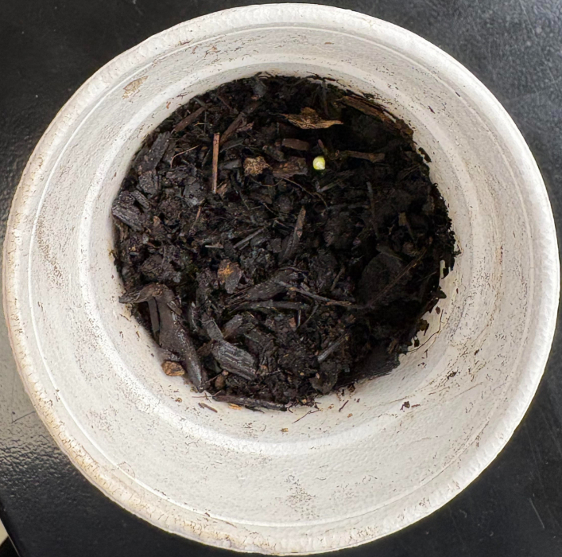
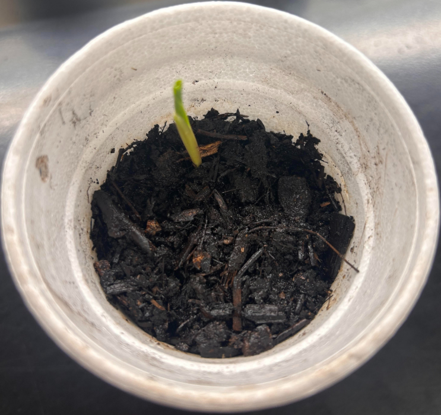

[ data_points ]
| height: | 5-8cm |
| leaf_count: | ~1 |
| water_given: | 20-30ml |
| light_exposure: | 24h |
[ FIELD_JOURNAL ]
Returning from the weekend, we were pleased to find the first signs of growth. The plant had sprouted significantly over the break, reaching a height of over 5 cm. This steady progress continued throughout the week, and we are now seeing the initial development of its first leaves...
[ WEEKLY_LOG_GALLERY ]
MON

TUE

WED

THU
FRI
SAT
SUN